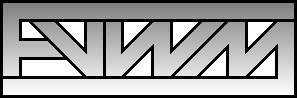
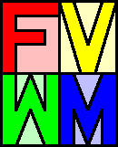

I have created a few logos and put them at http://remmler.org/fvwm/. These were all created with vector-based qcad or tgif, so they should scale nicely (I did do some post-processing in the gimp). I could always change colors, add drop shadows, etc., but I concentrated on the basic shapes. If anyone has comments or suggestions, please let me know. I will probably come up with some more later...



